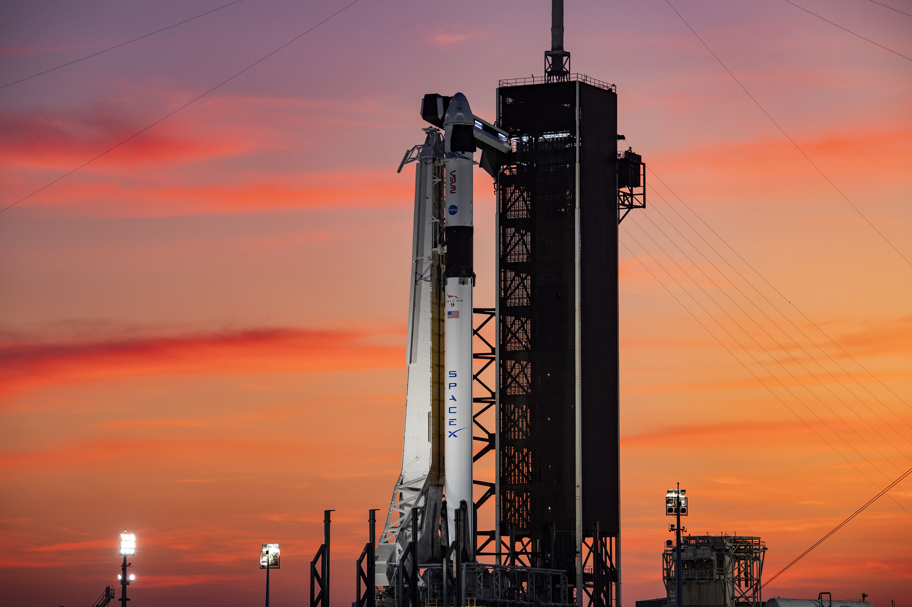

Ракеты SpaceX
SpaceX известна своими инновационными разработками в области ракетных технологий. Компания производит несколько типов ракет, каждая из которых имеет свои особенности и предназначение.
Falcon 9
Falcon 9 - это многоразовая двухступенчатая ракета-носитель, разработанная SpaceX. Она предназначена для доставки грузов и астронавтов на низкую околоземную орбиту, а также на Международную космическую станцию. Одной из самых впечатляющих черт Falcon 9 является ее способность возвращаться на Землю и приземляться вертикально. Первая ступень ракеты после завершения своей основной задачи может совершить управляемую посадку на платформу в океане или на суше, что является удивительным достижением инженеров SpaceX. Эти посадки не только подтверждают высокую степень автоматизации и точности системы управления, но и позволяют ракете снова использоваться для следующих полетов.
Falcon 9 не только начала эпоху многоразового космонавтики, но и изменила подход к запуску спутников. Ракета используется для вывода на орбиту не только государственных спутников, но и коммерческих полезных нагрузок, включая спутники для связи, метеорологии и научных исследований. Это, в свою очередь, стимулирует развитие новых технологий и шаги к более устойчивым и эффективным космическим системам.
Falcon Heavy
Falcon Heavy - это мощная ракета-носитель, основанная на трех объединенных первых ступенях Falcon 9. Она способна выводить на орбиту гораздо более тяжелые грузы, чем Falcon 9. Falcon Heavy используется для миссий, требующих больше мощности, таких как запуски спутников на геостационарную орбиту и научные миссии.
Первый запуск Falcon Heavy состоялся 6 февраля 2018 года и стал настоящим шоу для многих зрителей. Ракета вывела на орбиту красный спортивный автомобиль Tesla Roadster с манекеном по имени «Сентябрь» на водителя, а также множество технологий, предназначенных для демонстрации возможностей ракеты. Это событие привлекло внимание всего мира, символизируя амбиции SpaceX не только в области краткосрочных космических миссий, но и в более дальновидных целях, таких как исследование Марса.
Falcon Heavy предназначена не только для коммерческих запусков, но и для сложных научных исследовательских миссий. Она может выполнять задачи по доставке грузов на орбиту Луны, запуск межпланетных научных экспедиций и даже поддержку пилотируемых миссий. Эта ракета открывает новые перспективы для научного сообщества и позволяет осуществлять проекты, которые раньше казались невозможными из-за ограничений в грузоподъемности.
Starship
Starship - это многоразовый космический корабль, находящийся в разработке. Он представляет собой более крупное и мощное транспортное средство, чем Falcon 9 и Falcon Heavy. Starship разрабатывается для дальних космических миссий, включая полеты на Луну и Марс.
Одной из ключевых особенностей Starship является его многоразовость. Каждая единица может использоваться многократно, что сокращает стоимость полетов и позволяет запускать больше миссий. Кроме того, Starship предназначен для доставки крупных грузов, научных приборов, а также пассажиров на орбиту Земли, Луну и даже Марс. Это открывает новые возможности для научных исследований, коммерческих запусков и космического туризма.
Starship также отличается своим дизайном и материалами. Корабль изготовлен из нержавеющей стали, что обеспечивает ему высокую прочность и стойкость к условиям космической среды, включая экстремальные температуры. Это делает Starship идеальным кандидатом для длительных путешествий в глубокий космос, а также для посадок на других планетах.

Разработка и тестирование Starship проходят активно и открыто, что позволяет мировому сообществу следить за прогрессом и вовлечь людей в захватывающий процесс создания нового космического корабля. SpaceX провела множество испытательных полетов, на которых были проверены различные аспекты системы, включая посадку, взлет и маневрирование в атмосфере.
Starship не только нацелен на исследование Марса. Он также должен сыграть ключевую роль в программе NASA Artemis по возвращению человека на Луну. SpaceX выиграла контракт на доставку астронавтов на лунную поверхность, что делает Starship важным участником растущего интереса к исследованию Луны.